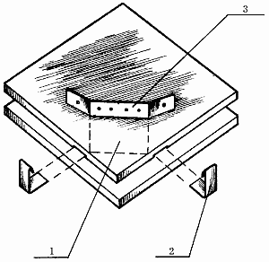
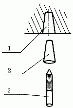
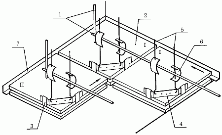
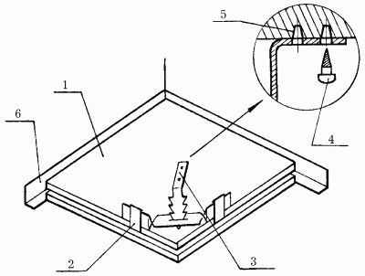

Облицовка потолка минеральными плитками „Акмигран“ и „Акминит“ и гипсовыми декоративными плитками.

В облицовочных работах по отделке потолка различают два способа: устройство плиточных потолков каркасной конструкции и облицовка плитками потолков бескаркасной конструкции. Устройство плиточных потолков каркасной конструкции предполагает наличие горизонтальных направляющих с подвесками (выполняющими несущую функцию подвесного потолка), заделанными в перекрытия. Монтаж таких направляющих возможен лишь при возведении несущих конструкций здания. Поэтому самостоятельно в домашних условиях такой подвесной потолок устроить технически невозможно.
Произвести облицовку потолка бескаркасной конструкции сможет практически каждый.
Облицовочные работы принято вести двумя способами: с устройством чернового каркаса и без него.
Устройство плиточного потолка на черновом каркасеМонтаж конструкции, как и в других случаях, подразделяется на несколько этапов:
– подготовка, разбивка и провешивание поверхности;
– подготовка материала;
– собственно установка плиток.
Подготовка поверхности заключается лишь в ее очистке от пыли, это вызвано больше гигиеническими требованиями, а не технологическими.
При подготовке плиток сортируют их по наличию пазов и выступов на боковых гранях, в прорези вставляют закладные крюки, соединенные крепежной скобкой (рис. 29).

Рис. 29. Подготовка плиток для устройства потолка: 1 – облицовочная плитка; 2 – закладные крюки; 3 – крепежная скоба.
Разбивку и провешивание поверхности начинают с определения чистого уровня потолка. Для этого гибким уровнем определяют и закрепляют линии низа потолка (по ним будут установлены пристенные опорные уголки).
Затем с помощью рулетки и угольника на полу помещения определяют продольную и поперечную оси и закрепляют их причальными шнурами; по одну сторону от оси раскладывают плитки, определив таким образом количество плиток в ряду.
Ряды, примыкающие к стенам, заполняют неполномерными плитками.
После этого приступают к сооружению и установке чернового каркаса: для этого в потолке по каждому предполагаемому ряду (с шагом в ряду в 1 м) закрепляют стальные штыри так, как это показано на рис. 30.

Рис. 30. Крепление чернового каркаса к потолку: 1 – отверстие в потолке; 2 – пластмассовая пробка; 3 – стальной штырь с резьбой.
В потолке просверливают отверстия и забивают туда пластмассовые пробки от дюбелей или деревянные шпонки, в которые ввинчивают стальные штыри. На стальных штырях закрепляют стальной пруток, выполняющий роль горизонтальной направляющей для крепления облицовочных плиток.
По периметру стен по линиям низа потолка устанавливают опорные уголки.
Черновой каркас для облицовки плитками потолка бескаркасной конструкции готов.
Следующий этап – непосредственно облицовка. Закрепив за опорные уголки на противоположных стенах причальный шнур для первого ряда (фиксирующий нижнюю плоскость потолка), от угла помещения начинают установку плит (рис. 31).

Рис. 31. Устройство плиточного потолка с использованием чернового каркаса: 1 – элементы чернового каркаса; 2 – облицовочные плитки; 3 – закладные крюки; 4 – крепежная скоба; 5 – вертикальная подвеска; 6 – согнутая (пружинная) пластина; 7 – пристенный опорный уголок.
Первую плитку опирают двумя сторонами на уголки, а угол с установленными крепежными скобами с помощью вертикальной подвески и согнутой (пружинной) пластины крепят к горизонтальной направляющей чернового каркаса.
Следующую плитку одной стороной опирают на пристенный опорный уголок, а выступ на ребре другой стороны совмещают с пазом уже установленной плитки. Свободный угол закрепляют (как и в первом случае) на горизонтальной направляющей чернового каркаса. И так далее до окончания ряда.
По ходу работы нужно следить за горизонтальностью плоскости подвесного потолка (для этого и нужен причальный шнур). Положение плиток, имеющих отклонение от горизонтали, регулируют смещением пружинной пластины по вертикальной подвеске.
Установка средних (не пристенных) плиток второго и последующих рядов отличается от установки плиток первого ряда тем, что две их стороны будут опираться не на пристенные уголки, а на пазы на ребрах ранее уложенных плиток.
По окончании облицовочных работ пристенные опорные уголки можно будет закрыть деревянным потолочным плинтусом.
Устройство плиточного потолка без чернового каркасаПодготовка поверхности к укладке плиток и подготовка материала в данном случае полностью аналогичны предварительным работам при устройстве подвесного потолка без использования чернового каркаса.
Непосредственно облицовочные работы отличаются от способа облицовки с применением чернового каркаса весьма значительно.
Для начала по периметру помещения на стенах на уровне чистого потолка закрепляют опорные уголки. В потолке с шагом, равным длине плиток, просверливают отверстия, в которые забивают пластмассовые пробки от дюбелей либо деревянные шпонки.
Затем с помощью дюбелей или шурупов ввинчивают в эти пробки или шпонки подвески для установки облицовочных плиток.
Работу начинают от угла помещения. Первую облицовочную плитку устанавливают следующим образом: двумя сторонами опирают на пристенные уголки, а свободный угол плитки надевают крепежной скобой на подвеску.
Вторую плитку устанавливают одной стороной на опорный уголок, выступ другой стороны вставляют в паз уже установленной плитки, а свободный угол закрепляют на подвеску аналогично первой плитке. Дальнейшую облицовку производят по уже отработанной технологии (рис. 32).

Рис. 32. Устройство плиточного потолка без применения чернового каркаса: 1 – облицовочные плитки; 2 – закладные крюки с крепежной скобой; 3 – подвеска; 4 – шуруп либо дюбель; 5 – пластмассовая пробка или деревянная шпонка; 6 – опорные уголки.
Уход за плиточными потолкамиУход за плиточными потолками, облицованными гипсовыми декоративными плитками, следующий.
Поскольку гипсовые материалы в достаточной степени обладают гигроскопичностью, то их не рекомендуется мыть.
Пыль с таких поверхностей следует удалять мягкой влажной ветошью, укрепленной на щетке с жесткой щетиной или венике.
Облицовку в местах отслоения плиток ремонтируют, а треснувшие и сильно загрязненные плитки заменяют новыми (для этого следует оставлять запас материалов). В том случае, если при облицовке потолка были использованы минеральные плитки „Акмигран“ и „Акминит“, то уход за ними не допускает никакого контакта с водой, приемлема только сухая уборка с помощью пылесоса.